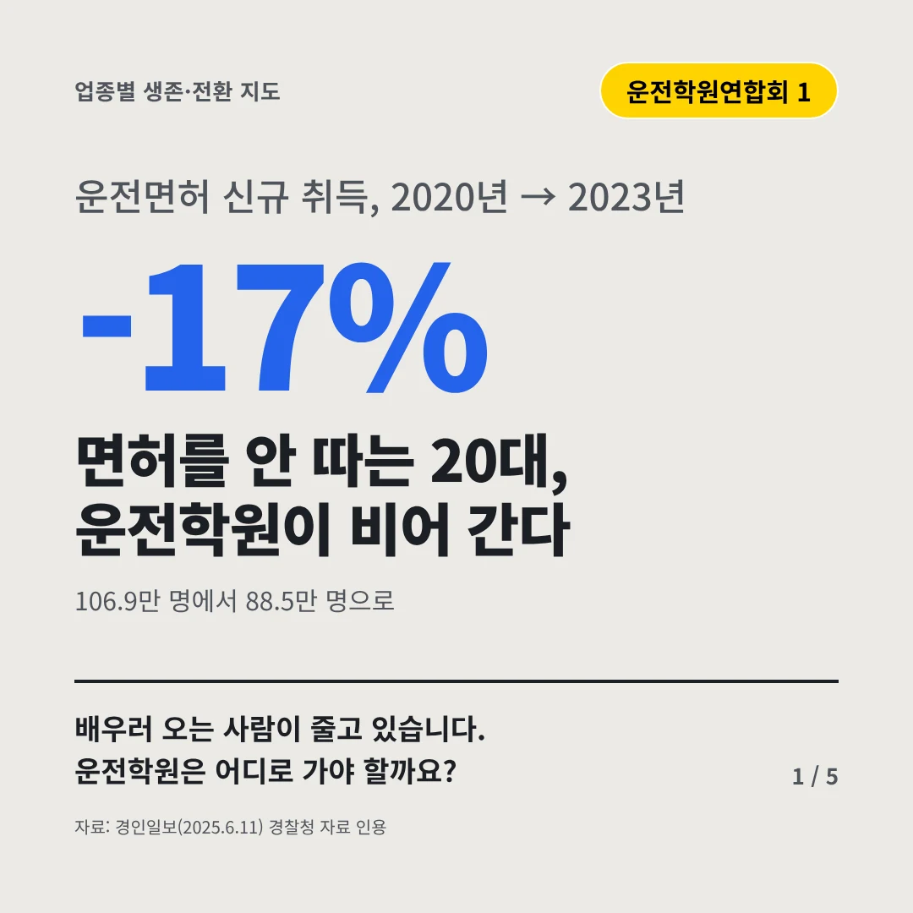
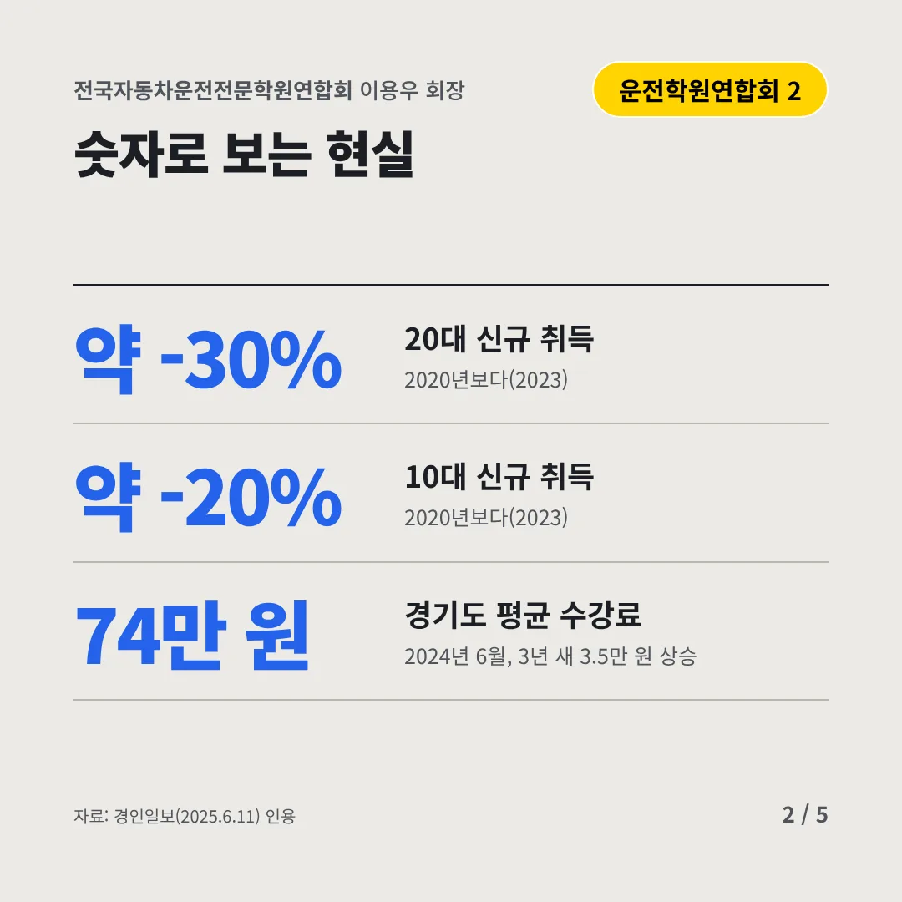
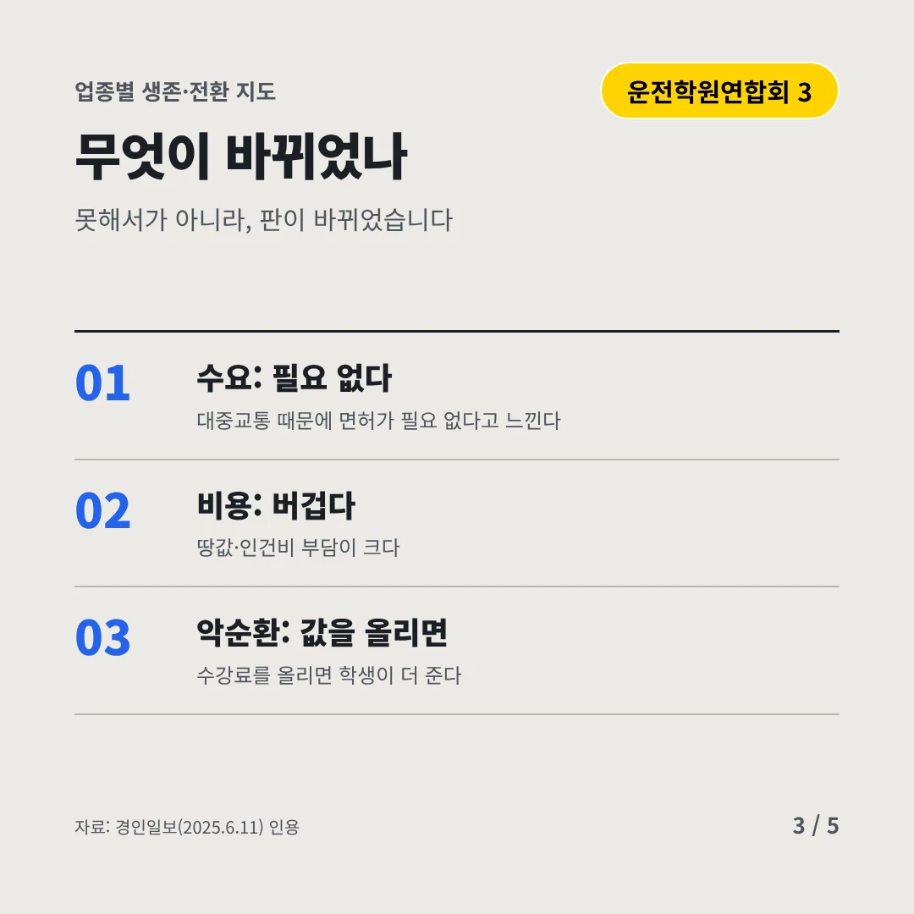
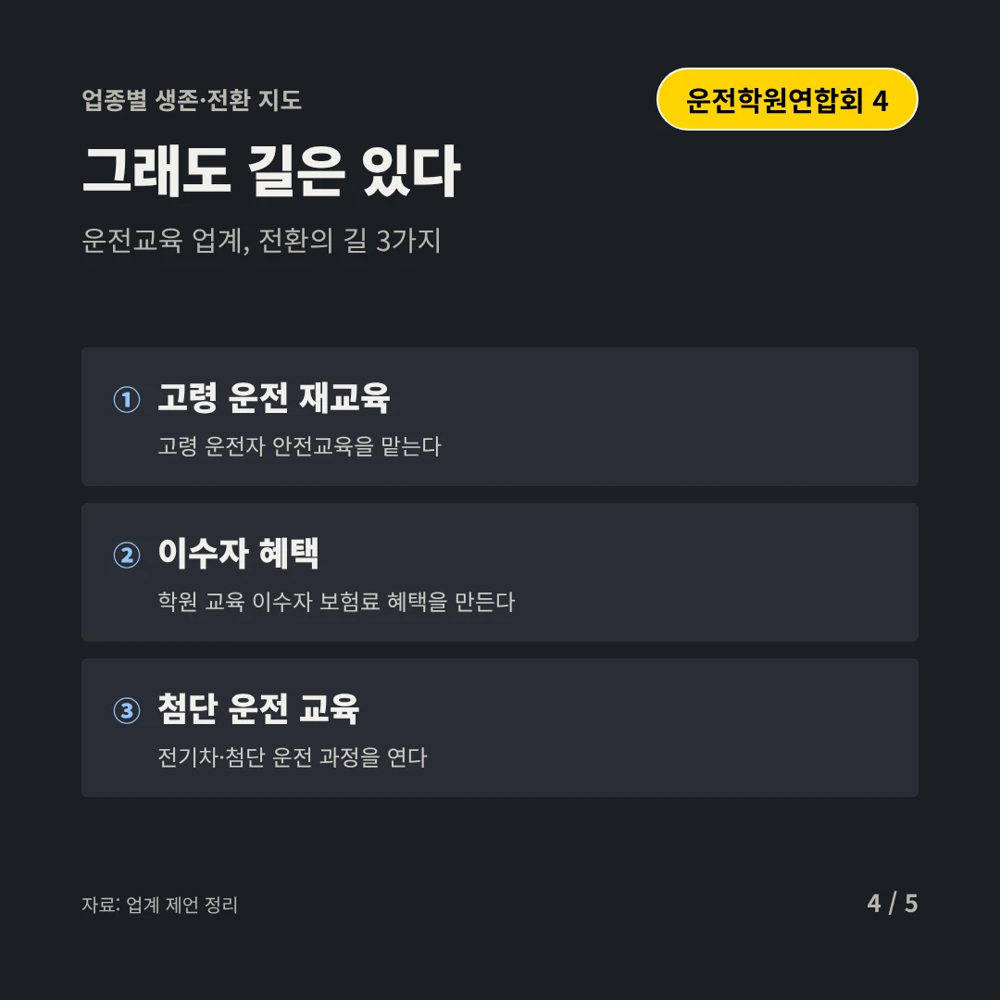
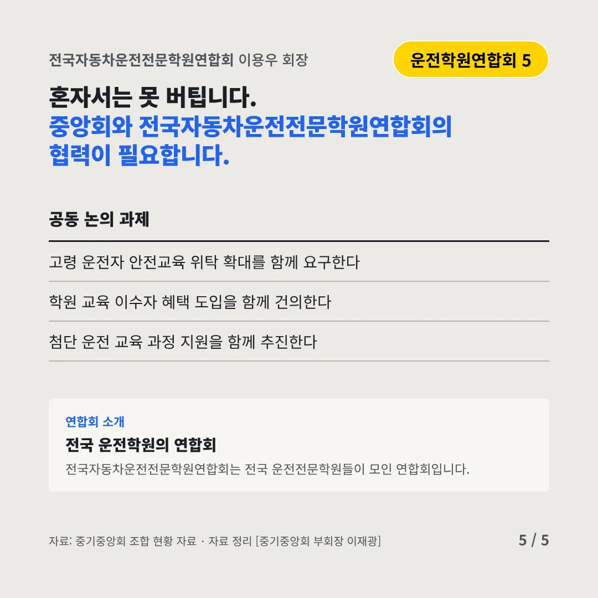
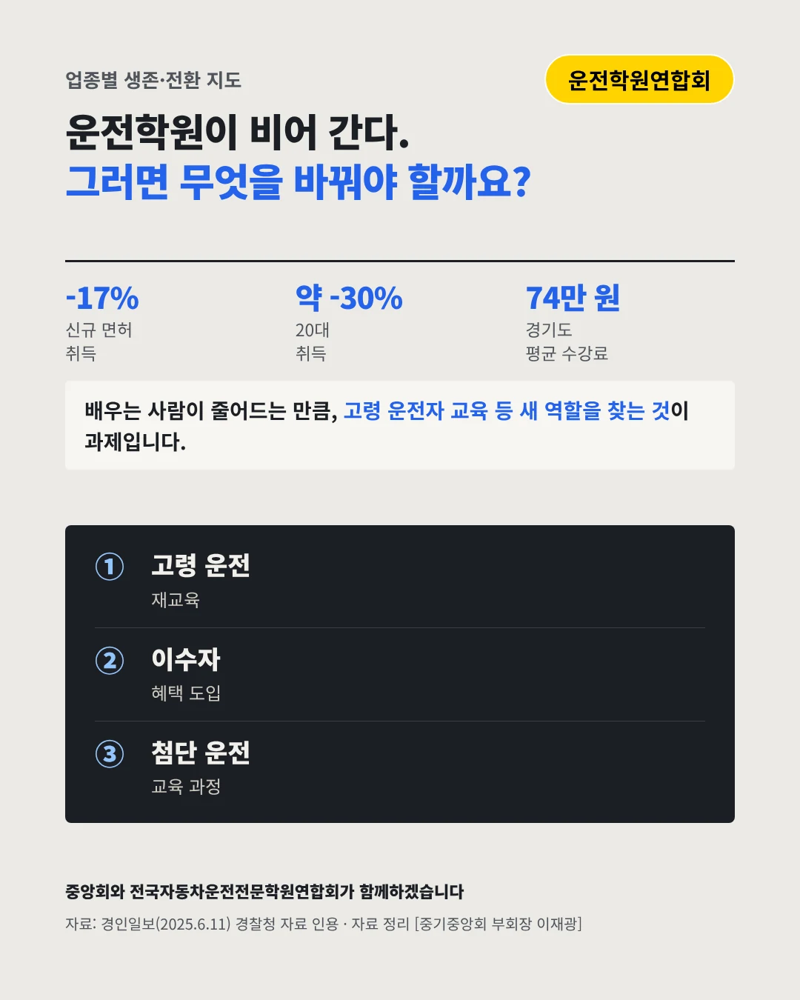

전국자동차운전전문학원연합회
면허를 안 따는 20대, 운전학원이 비어 간다
-17% 운전면허 신규 취득, 2020년 → 2023년






배우러 오는 사람이 줄고 있습니다. 운전학원은 어디로 가야 할까요?
숫자로 보는 현실
- 약 -30%20대 신규 취득2020년보다(2023)
- 약 -20%10대 신규 취득2020년보다(2023)
- 74만 원경기도 평균 수강료2024년 6월, 3년 새 3.5만 원 상승
무엇이 바뀌었나
- 수요: 필요 없다대중교통 때문에 면허가 필요 없다고 느낀다
- 비용: 버겁다땅값·인건비 부담이 크다
- 악순환: 값을 올리면수강료를 올리면 학생이 더 준다
그래도 길은 있다
- 고령 운전 재교육고령 운전자 안전교육을 맡는다
- 이수자 혜택학원 교육 이수자 보험료 혜택을 만든다
- 첨단 운전 교육전기차·첨단 운전 과정을 연다
한 장 요약

연합회 소개
전국자동차운전전문학원연합회는 전국 운전전문학원들이 모인 연합회입니다.
자료: 경인일보(2025.6.11)